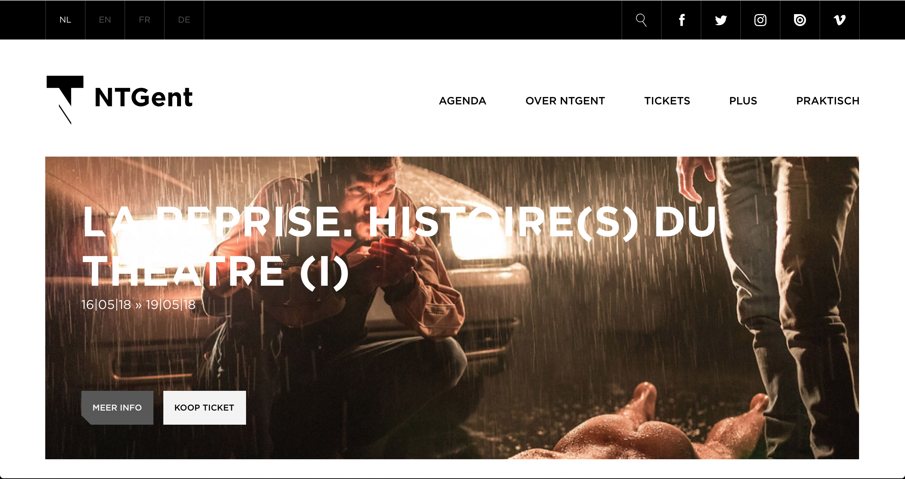
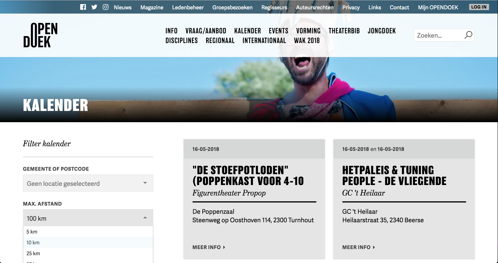
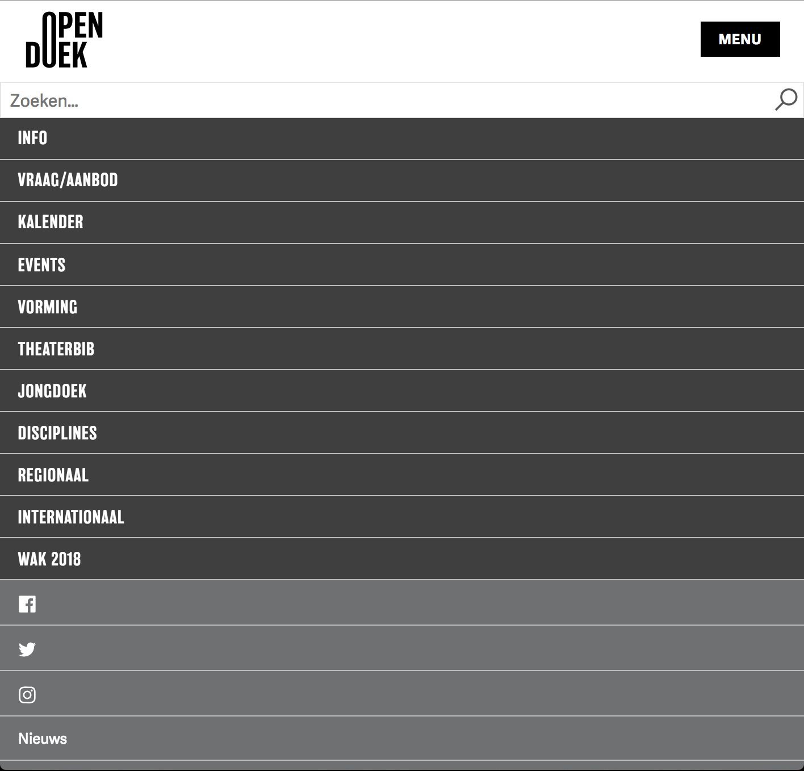
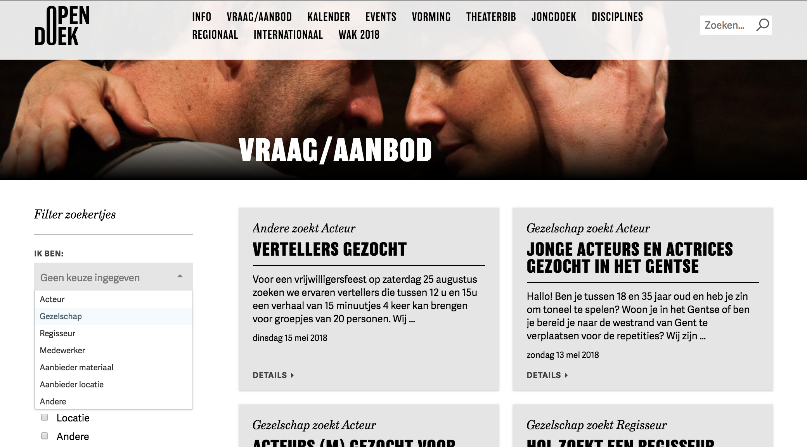
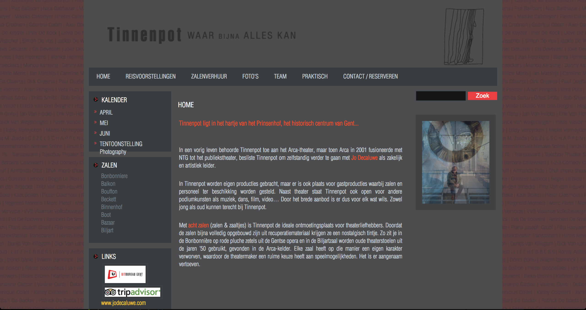

Concurrentie analyse
NT Gent: Nederlandse Toneel Gent
Het eerste zicht van de website geeft meteen een professionele indruk,
het is een vrij sobere maar toch zeer overduidelijke website.
De navigatie bovenaan bestaat uit niet meer dan 5 linkjes en elk zijn ze duidelijk over hun inhoud.
De stijl die gebruikt is om de agenda weer te geven vind ik ook leuk gedaan.
Er is een zoekmogelijkheid die makkelijk terug te vinden is, ook kan je de taal van de webiste aanpassen.
Bij de ticketshop is er ook zeker nagedacht over de usability voor de gebruiker.
Verder is alles mooi overzichtelijk en duidelijk te lezen.
https://www.ntgent.be/nl

Opendoek
Mooie opbouw van de website en mooi combinatie gebruik van fonts en beelden.
Navigatiebalk vind ik te druk/ingewikkeld, er staan 11 pagina-linken wat ikzelf teveel vind.
Boven de navigatie is er dan nog eens een nav met teveel links.
De filter voor de agenda is zeer handig en het overzicht met de voorstellingen is ook goed duidelijk.
Tickets kun je niet kopen via de website maar een zoekfunctie is er wel.
Indien je de site verkleind wordt de nav een dropdown menu, wat wel goed is,
maar die is ook weer veel te druk met teveel linkjes.
https://www.opendoek.be
 

Tinnenpot Gent
Een heel grijze, saaie website. De navigatie heeft niet veel opmaak en nodigd niet erg uit om te lezen.
De nav heeft wel niet teveel linkjes, ze heeft ook een submenu als je er over hovert.
Er staan heel veel blokteksten en niet veel afbeeldingen. De zoekfunctie is minimalistisch qua opmaak, maar valt wel direct goed op.
tickets kopen gaat niet maar je kan wel makkelijk de zaal huren.
http://www.tinnenpot.be/
